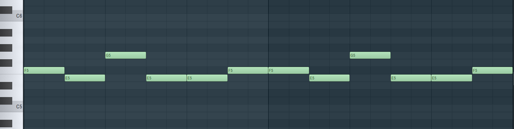
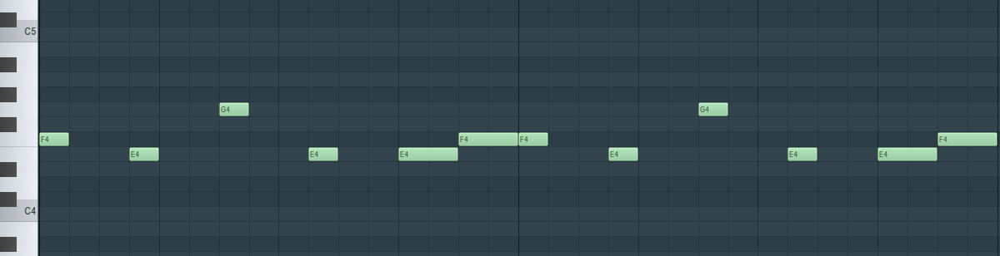
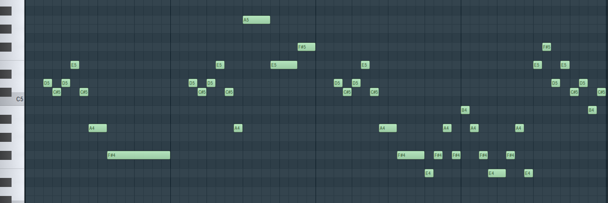
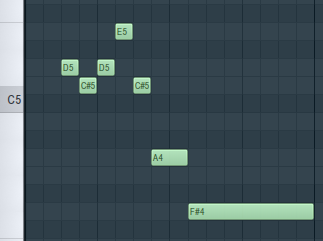
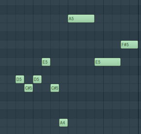

Penumbra Phantasm has quite the storied history - originally composed by Toby Fox for Homestuck, it went unused despite numerous renditions and iterations (and leaks therof).
Its motifs went on to be heard throughout Homestuck 's soundtrack, including (but not limited to) Savior of the Waking World and Umbral Ultimatum by Toby Fox, Renewed Return by Marcy Nabors, and Dogfight by various artists.
(Source: Penumbra Phantasm | HSMusic Wiki)
Now, with the release of Deltarune Chapters 1 and 2, some have noticed that the song's influence may not have ended with Homestuck - indeed, Penumbra Phantasm appears to have been referenced not only in Deltarune, but all the way back in Undertale, as well.
If you haven't heard it before (or haven't heard it in a while), I recommend listening to and getting acquainted with it:
Most pages in this index operate under the assumption that whoever reads them will have already read the main page.
The subject matter of this page, however, leads me to suspect it may be linked out-of-context, and I therefore feel obligated to re-issue this-
Please do keep in mind three things:
Use your own judgement when reading through, and especially if you plan to cite this index elsewhere!
First, let's pick out the relevant portions of the song, and figure out what makes them identifiable.
This is the melody the song starts with, first in 3/4 time:

And then in 4/4 time:

Seeing how simple this motif is, to be confident in any quote, I'd need the exact intervals:
[-1 +3 -3 +0 +1, repeat]
The 4/4 variation's rhythm is notable too of course, with its noticeable syncopation, but in my opinion, Toby Fox doesn't tend to pay too much mind to rhythm when quoting leitmotifs, so I don't think it's necessary for prospective quotes to have the exact same rhythm.
(The first part of it, at least)

Now this is a leitmotif!
It's based off of this motif:
[-1 +1 +2 -3 -4 -3]
It's repeated verbatim in the third measure, and in the second with a modification:
[-1 +1 +2 -3 -4 +12 -5 +2]
For this part of Penumbra Phantasm, I think the most relevant parts are...
Take a listen to timestamps 1:18-1:29 of Hopes and Dreams, where the 'Your Best Friend' motif is introduced:
Now, let's take only the right-ear channel of Hopes and Dreams :
Now let's apply a high-pass filter to focus only on melodies above 500hz (amplified so it isn't made quieter):
And a low-pass filter to focus only on melodies below 550hz (again, amplified):
Does that piano melody sound at all familiar?
Well, how about we look at a transcription:
Yo, dawg, I think I just saw a leitmotif!
Yep, you saw/heard that correctly, this is a perfect quote of Penumbra Phantasm 's 4/4 intro:
Note that 1:36-1:46 of SAVE the World repeats this segment verbatim, albeit slightly faster and higher-pitched:
In any case, although the quote is perfect, the question remains: is it intentional?
In my opinion, yes.
These exact intervals with this exact rythm makes for too strong of a coincidence to ignore.
Additionally, consider that Toby Fox had been tweaking Penumbra Phantasm for years at this point, even going so far as to prank the Homestuck fanbase by dealing out fake 'leaks' of it.
Given this, it's difficult for me to argue that Toby composed this melody without noticing the striking resemblance.